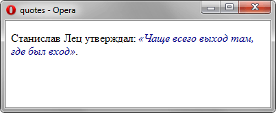

quotes
Устанавливает тип кавычек, который применяется в тексте документа. В каждом языке существуют свои традиции для обозначения кавычек, свойство quotes позволяет задать вид их отображения по всему тексту и установить, таким образом, его единообразное оформление. Добавление кавычек происходит автоматически для содержимого контейнера <q>, а также для текста, к которому применяется стилевое свойство content со значением open-quote (открывающая кавычка) или close-quote (закрывающая кавычка).
Краткая информация
| Значение по умолчанию | Зависит от браузера, его настроек и операционной системы. Чаще всего используется кавычки вида "/" |
|---|---|
| Наследуется | Да |
| Применяется | Ко всем элементам |
Синтаксис
quotes: <Строка> <Строка> | noneЗначения
В качестве значения используется символ текста (например, quotes: "«" "»") или символ юникода. Некоторые из них перечислены в табл. 1.
| Вид | Спецкод HTML | Юникод | Описание |
|---|---|---|---|
| " | " | \0022 | Двойная кавычка, применяется обычно в моноширинных шрифтах, для обозначения символа дюйма, а также угловых секунд. |
| ' | ' | \0027 | Апостроф. Символ угловых минут, в латинице применяется для обозначения мягкого знака (popalas' lisa). |
| « | « или « | \00ab | Открывающая двойная угловая кавычка. |
| » | » или » | \00bb | Закрывающая двойная угловая кавычка. |
| ‘ | ‘ | \2018 | Открывающая одинарная кавычка. |
| ’ | ’ | \2019 | Закрывающая одинарная кавычка. |
| “ | “ | \201c | Открывающая двойная кавычка в англоязычных текстах или закрывающая для русского языка. |
| ” | ” | \201d | Закрывающая двойная кавычка в англоязычных текстах. |
| „ | „ | \201e | Открывающая двойная кавычка. Применяется в русском языке. |
- none
- Кавычки не добавляются.
Пример
<!DOCTYPE html>
<html>
<head>
<meta charset="utf-8">
<title>quotes</title>
<style>
q {
font-family: Times, serif; /* Шрифт с засечками */
font-style: italic; /* Курсивное начертание текста */
color: navy; /* Синий цвет текста */
quotes: "\00ab" "\00bb"; /* Кавычки в виде двойных угловых скобок */
}
</style>
</head>
<body>
<p>Станислав Лец утверждал: <q>Чаще всего выход там, где был вход</q>.</p>
</body>
</html>Результат данного примера показан на рис. 1.

Рис. 1. Применение свойства quotes
Объектная модель
Объект.style.quotes
Спецификация
| Спецификация | Статус |
|---|---|
| CSS Level 2 (Revision 1) | Рекомендация |
Браузеры
| Internet Explorer | Chrome | Opera | Safari | Firefox |
| 8 | 11 | 4 | 5.1 | 1.5 |
| Android | Firefox Mobile | Opera Mobile | Safari Mobile |
| 2.1 | 2 | 6 | 5.1 |